查看案例
查看案例 NITEOFF
围绕睡眠习惯、睡前行为与个人反思，探索跨 iPhone、MacBook 和 Apple Watch 的健康体验。
你好，我是陈瑜萱 Iris，一名喜欢设计，也喜欢探索新技术的设计师。
目前在悉尼大学攻读交互设计与电子艺术硕士。本科数字媒体技术背景，让我对 UI/UX、产品设计和视觉表达都有浓厚的兴趣。
我喜欢从用户需求出发，把想法一步步变成真实的设计。最近也在探索 AI 工具与 Vibe Coding，希望尝试更多有趣、高效的创作方式。
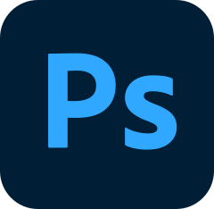
Adobe Photoshop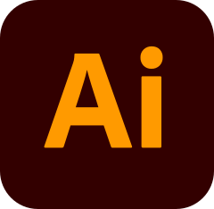
Adobe Illustrator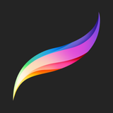
Procreate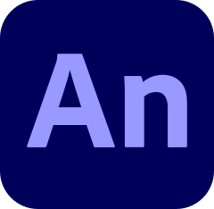
Adobe Animate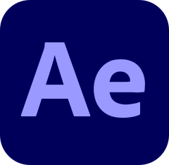
Adobe After Effects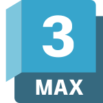
Autodesk 3ds Max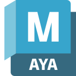
Autodesk Maya从数字产品到平面与动效，记录设计构想和尝试。
UI/UX & PRODUCT DESIGN
查看案例 围绕睡眠习惯、睡前行为与个人反思，探索跨 iPhone、MacBook 和 Apple Watch 的健康体验。
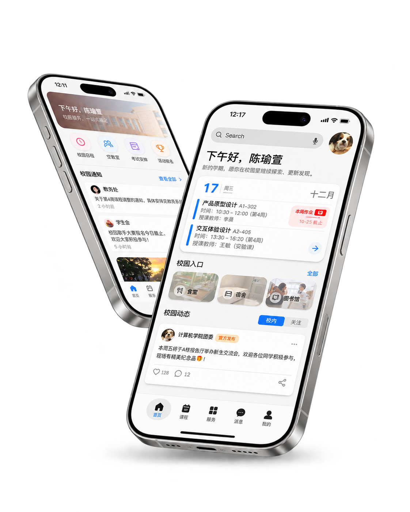
查看案例Campus+ 将教务查询、宿舍服务和校园活动整合在同一个应用中。
RoomieBoard — Shared Housing Decision Board
Independent Project / Product Design / Web Development
为准备出国、计划共同租房的室友设计的协作看板。将候选房源、看房意见与待确认事项集中到一个界面，帮助室友整理讨论，一起做出租房决策。
体验原型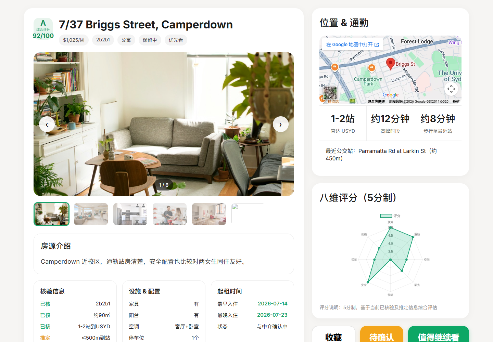
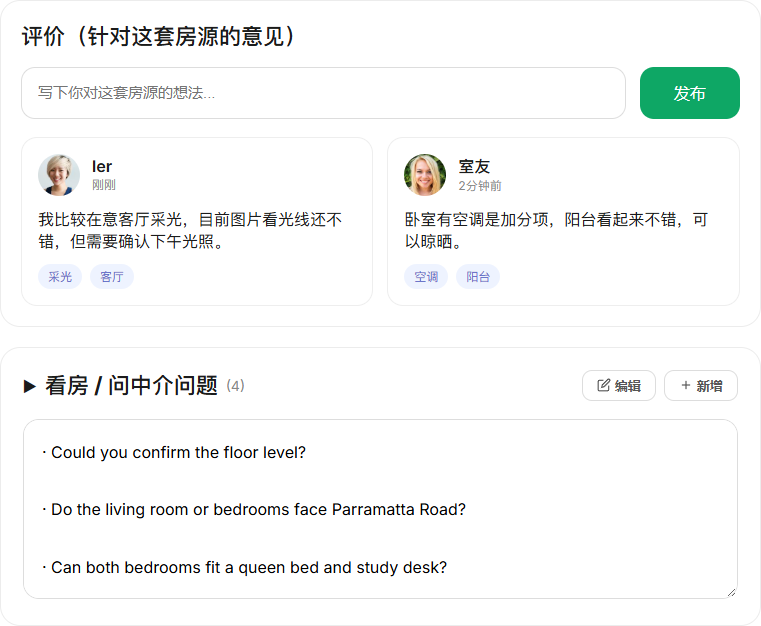
Digital Twin Smart Campus System
Web Development / Data Visualization / Digital Twin
基于 Web 的数字孪生智慧校园模拟系统，通过三维校园模型与数据可视化驾驶舱，整合能耗监测、设备管理、车辆管理及人员出入信息，探索更直观、高效的校园运营管理方式。
第十七届上海市大学生计算机应用能力大赛获奖项目。
TaxMind — Mini Program & Content Operations
Product Operations / WeChat Mini Program / Content Operations
在高顿教育实习期间，我参与「税启智 TaxMind」微信小程序的产品内容管理与运营支持工作。项目依托小鹅通平台，围绕财税学习与职业教育场景组织课程和栏目内容，参与日常配置维护及使用体验检查。同时，我独立负责配套微信公众号的内容运营，从选题、视觉素材整理、图文编辑到发布维护，协同呈现小程序与公众号的内容触点。
基于小鹅通平台组织课程与栏目内容，进行内容配置、信息更新和使用流程检查，并协助整理运营反馈。
独立处理公众号选题、视觉素材整理、图文编辑排版、发布和日常维护。
点击图片查看大图
GRAPHIC & VISUAL DESIGN
为高顿教育的 AI 财税管理师课程设计促销海报与产品宣传长图。


CLIO · 晶亮护唇精华
围绕产品色号、视觉包装与产品卖点，设计移动端详情页视觉。


提拉米苏与和藏酒礼盒
两款包装效果图，以可可色格纹和书法山水分别呈现甜品盒与酒礼盒。


以中国古代数学典籍《周髀算经》为灵感，将传统天文数学、几何线条和文化符号融入现代实验性平面设计。
Ancient Chinese Mathematics
2024
Ancient Wisdom, Experimental Visuals.
查看完整作品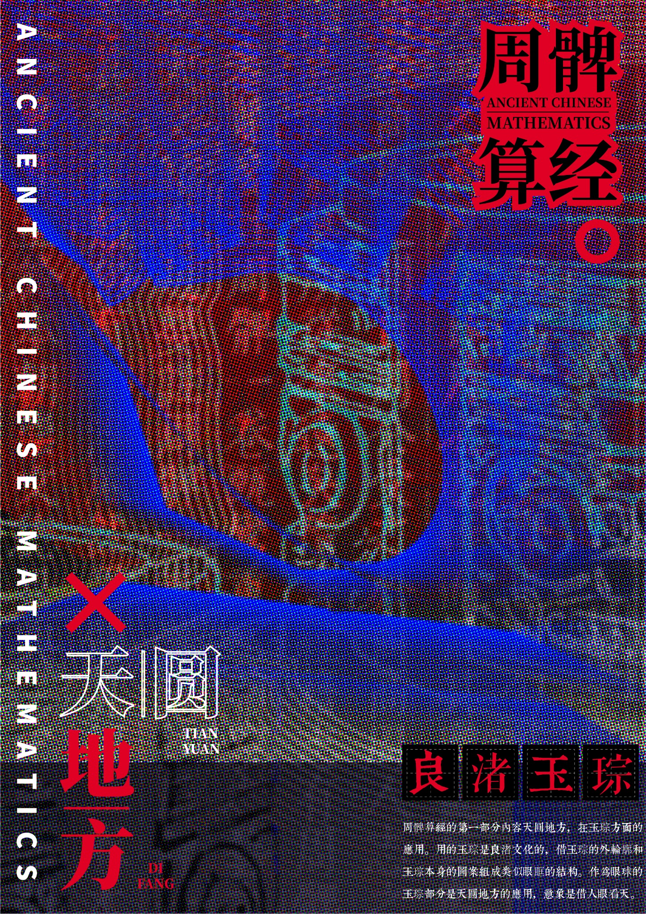
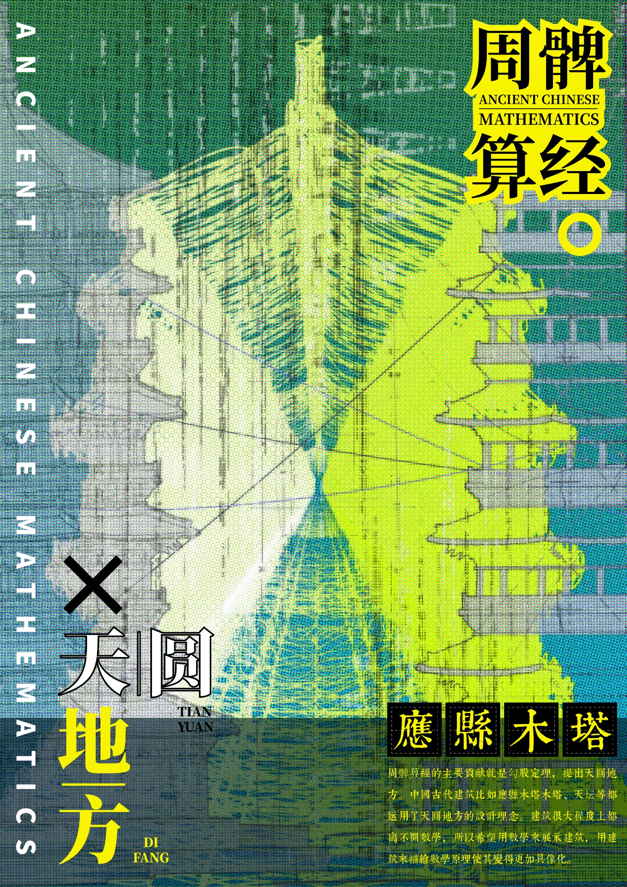
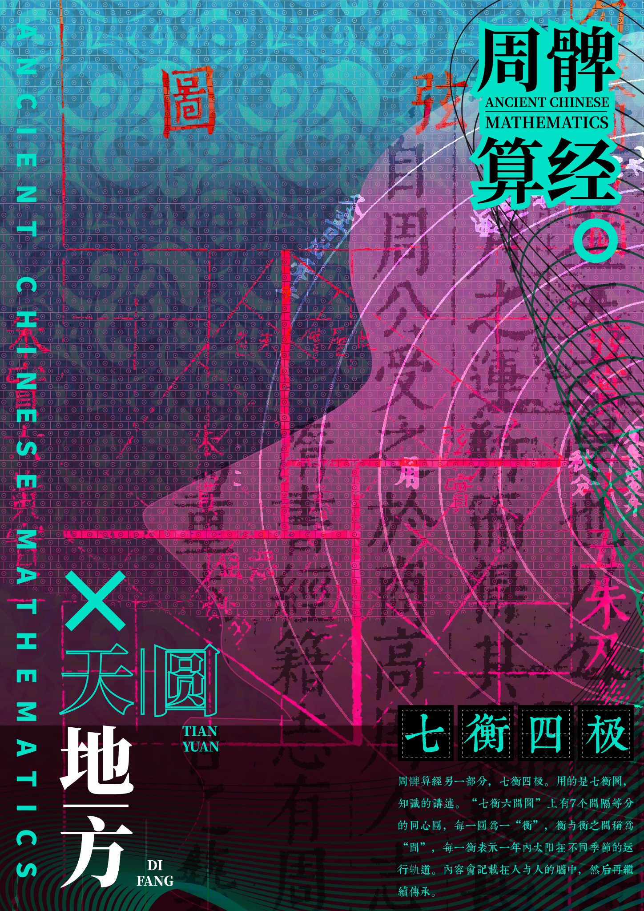
3D & MOTION
以面霜、唇膏和粉底为对象，呈现玻璃、金属与膏体在不同光线下的质感。
用剖切视角呈现两层居住空间、家具布局和室内光影。
三段短片分别呈现落花、山路行车和水面波动。
PHOTOGRAPHY
用镜头记录日常，也收藏那些偶然出现的光影、色彩与瞬间。
记录街头人物、建筑细节和光影在城市表面留下的变化。
产品实习生
参与小程序产品建设、需求沟通及内容优化。查看相关项目
平面设计实习生
参与 IP 文创及品牌视觉设计。
市场营销实习生
参与产品推广、内容运营与业务支持。
UI 设计
参与云闪付相关项目的界面及功能设计。
云剪辑工程师
负责课程视频剪辑与视觉呈现优化。
The University of Sydney
交互设计与电子艺术 · 硕士
数字媒体技术 · 本科
负责校园活动宣传、视觉设计及新媒体运营。
上海市大学生计算机应用能力大赛市赛三等奖、校级一等奖学金。
作品目录分为 UI/UX 与产品设计、平面与品牌视觉、三维与动效和摄影。当前优先展示数字产品项目，其余素材会陆续补充。
选择「UI/UX 与产品」并打开案例页，可以查看项目概览。设计过程、高保真截图与交互原型会随真实资料补充。
在页面底部的联系区可以查看邮箱并下载简历。
正在寻找 UI/UX 设计、产品设计与 AI 创意相关的实习机会。期待参与有趣的产品，也欢迎交流设计与新的想法。